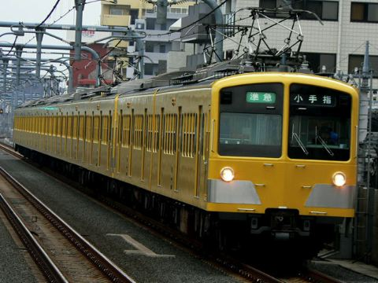

駅員事務室＆インフォメーション
駅長室（駅長日記他）
１.西武＆秩鉄写真館
２.西武＆秩鉄紹介
３.西武・秩鉄レポート
４.よしのぶ'sトラベログ
５.A列車ワールド
御乗り換え口

■ 更新情報
2007/07/01
全域
サイトリニューアル
2007/06/13
２番線
各駅紹介 ひばりヶ丘駅データ公開
<西武鉄道＆秩父鉄道ＮＥＷＳ>（６月１１日更新）１：現在秩父鉄道で運転しているSLパレオエクスプレス号（C58-363号）の車両不具合が発見され、現在修繕を行っておりますが、6月16日（土）、17日（日）についての運転は、蒸気機関車を重連の電気機関車に替えて運転実施します。なおＳＬ車両修繕が完了するまでＳＬ指定席券等の発売も中止しておりますので、ＳＬご利用を希望されているお客様は十分にご注意下さい。２：三峰ロープウェイ運休期間延長：現在もなお運休を続けている三峰ロープウェイは、さらに運休期間を延長し秩父鉄道の情報などを整理すると１１月３０日まで運休するとの情報です。現在は秩父鉄道からはロープウェイ運休に伴う代替バスの運行区間延長のみしか伝えられていませんが、おそらくロープウェイが長期にわたる運休に踏み込むことは間違えない模様です。３：新型通勤車両３００００系、２００８年４月頃をメドに導入！今年度は８×３＝２４両を製造予定。
＜三峰ロープウェイ＆宝登山ロープウェイ運休＞
三峰ロープウェイは点検作業に伴い、
２００７年５月３１日まで運休しております。（さらに１１月３０日まで運休期間延長予定）
三峰山方面へお出かけされる際は、平日であれば秩父湖からの代行バス、休日であれば西武秩父駅発の急行バスをご利用下さい。また、宝登山ロープウェイは定期検査に伴い
６月１８日から６月２７日の間、ロープウェイの運転を休止致します。
なお運休期間中は宝登山ロープウェイに関する割引は効きませんのでご注意下さい。今日も芳延SEIBU STATIONへのご来場、誠にありがとうございます。どうぞごゆっくりとお過ごし下さい。なおサイトの内容再編を予定しております。詳細な内容については後日お知らせ致します。：駅長
COPYRIGHT (C) YOSHINOBU SEIBU STATION ALL RIGHTS RESERVED. Designd by YUMOTO